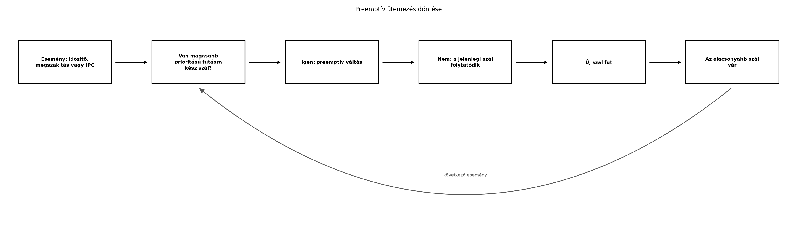

A Az RTOS és Zephyr alapok alfejezetben már
lefordítottuk és elindítottuk az első Zephyr-alkalmazást. Egy valós
TerraSense-csomópontban azonban több tevékenység fut egyidejűleg: a
szenzort olvasni kell, az adatot elő kell készíteni a küldésre, a szelep
állapotát figyelni kell, és közben a watchdogot is kezelni kell. A
main() függvényben egyetlen „szuperhurok” (super loop)
mindezt nehezen teszi időben helyessé. A Zephyr-szálak és az ütemező ezt
a problémát úgy oldják meg, ahogyan egy Linuxos pthread
tenné – azzal a különbséggel, hogy minden szál ugyanabban a címtérben
fut, a verem mérete pedig fordítási időben rögzített.
Ebben az alfejezetben létrehozzuk a ts-node első két
szálát: egy mérőszálat és egy küldőszálat. A mérőszál rendszeresen
mintát vesz, a küldőszál pedig elkészíti az üzenetet. Ez a felépítés
lesz az alapja a későbbi szinkronizációnak (Szinkronizáció és üzenetátadás) és a robusztus
eszközszoftver-architektúrának (Eszközszoftver-architektúra).
Definíció. A Zephyrben a szál (thread) egy önálló végrehajtási kontextus, amelynek saját veremterülete, prioritása és belépési pontja van. A szálak ugyanabban a címtérben futnak, ezért a globális változókat közvetlenül elérik, de a hozzáférés szinkronizálást igényel.
Definíció. A prioritás (priority)
azt határozza meg, hogy az ütemező melyik futásra kész szálat válassza
ki. A Zephyrben minél kisebb a szám, annál magasabb a
prioritás. A nemnegatív prioritású szálak
preemptívek, a negatív prioritásúak
kooperatívak. A preemptív szál megszakíthat egy
alacsonyabb prioritású preemptív szálat, ha futásra kész állapotba
kerül. A kooperatív szál csak akkor adja át a processzort, ha saját maga
blokkol (például k_sleep()-pel) vagy kilép; más szál nem
veheti el tőle a vezérlést.

Az ábra azt mutatja, hogy a Zephyr ütemezője minden esemény után újra értékeli a futásra kész szálakat. Ha egy magasabb prioritású szál felébred (például lejár az időzítője), akkor az alacsonyabb prioritású szál futása azonnal megszakad. Ezt nevezzük preemptív ütemezésnek.
A Zephyrben a szálak létrehozása általában kétféleképpen történhet: -
Statikus definíció a K_THREAD_DEFINE
makróval: a szálat a rendszer a boot során hozza létre, a verem mérete
és a prioritás fordítási időben ismert. - Dinamikus
létrehozás a k_thread_create() függvénnyel: a
verem és a szálstruktúra memóriáját a hívó biztosítja.
A beágyazott eszközökön a statikus definíció az előnyösebb, mert a memóriahasználat már a linkeléskor ismert, és nincs dinamikus foglalási hiba.
Veremméret és ellenőrzés. A szál veremtája
tartalmazza a futási kontextust (regiszterek, visszatérési címek) és a
függvényhívások lokális változóit. A verem mérete fordítási időben
rögzített, ezért a helyes méret megválasztása kritikus. A Zephyr két
eszközt kínál a veremproblémák felderítésére: - Stack
sentinel (CONFIG_STACK_SENTINEL): a verem végére
egy ismert bájtot helyez, és ha azt a szál felülírja, a rendszer hibát
jelez. - Thread analyzer
(CONFIG_THREAD_ANALYZER): a
k_thread_stack_space_get() függvénnyel lekérdezhető, mennyi
szabad veremterület maradt az aktuális szálban.
A verem méretét becsülni lehet az alábbi összefüggéssel:
$$S_{\text{total}} = S_{\text{context}} + S_{\text{max\,call\,depth}} + S_{\text{isr}} + S_{\text{margin}}$$
Ahol a szálváltáskor mentett kontextus mérete (architektúrafüggő, jellemzően néhány száz bájt), a legmélyebb hívási lánc lokális változóinak együttes mérete, a megszakítás-kezelők által a szál vermén használt ideiglenes terület, pedig biztonsági tartalék (például 30–50%). A pontos érték méréssel határozható meg; a becslés után mindig ellenőrizni kell a maradékot.
Időzítés. A szálak időzítésére két alapvető
mechanizmus van: - k_sleep(): a hívó szálat adott időre
blokkolja. Az alvó szál nem fogyaszt CPU-időt, és futásra kész állapotba
kerül, amikor az idő lejár. - k_timer: aszinkron időzítő,
amely egy callback függvényt hív meg a beállított időközönként. A
callback megszakítás- vagy rendszerkontextusban fut, ezért nem
blokkolhat, és csak rövid műveleteket végezhet.
A gyakorlatban a jitter az az időbeli
bizonytalanság, amellyel egy periodikus szál ténylegesen futni kezd. A
Zephyr szál k_sleep()-pel való periodikus futtatásánál a
jittert a megszakítások késleltetése, az ütemező futási ideje és a
magasabb prioritású szálak terhelése okozza. A k_timer
callback jittere általában kisebb, de a callbackben végzett munka
korlátozott. A native_sim környezet nem valós hardver,
ezért az ott mért jitter csak becslésre alkalmas.
Prioritásinverzió. A prioritásinverzió akkor lép fel, ha egy magas prioritású szál egy olyan erőforrásra vár, amelyet egy alacsony prioritású szál tart foglalva, miközben egy közepes prioritású szál folyamatosan fut. Ezáltal a magas prioritású szál határozatlan ideig blokkolva marad, mintha a prioritása alacsonyabb lenne. A Zephyrben a mutex támogatja a prioritásöröklést (priority inheritance): amikor egy magas prioritású szál vár egy mutexre, az azt tartó szál ideiglenesen megkapja a magas prioritást, hogy minél hamarabb elengedje az erőforrást. A prioritásöröklés bekapcsolásához a megfelelő Kconfig opcióra van szükség (ellenőrzési igény: a Zephyr verziójában a mutex prioritásöröklés opció pontos neve változhat). A mutexek részletes tárgyalása a Szinkronizáció és üzenetátadás alfejezetben következik.
A szálak és az ütemezés tervezésekor a következő fő kérdéseket kell eldönteni:
| Szempont | Preemptív szál | Kooperatív szál |
|---|---|---|
| Vezérlés átadása | Automatikus, magasabb prioritású szál közbeavatkozhat | Csak explicit blokkolással (k_sleep,
k_yield) |
| Alkalmas | Időérzékeny események, rövid futás | Hosszú, nem megszakítható szakaszok, egyszerű állapotgépek |
| Előny | Jó válaszidő, rugalmas ütemezés | Kiszámítható, nincs meglepetésszerű megszakítás |
| Hátrány | Több megosztott állapotot kell szinkronizálni | Rosszul megírt szál blokkolhatja a rendszert |
A Zephyrben a prioritásokat a K_PRIO_PREEMPT(n) és
K_PRIO_COOP(n) makrókkal szokás megadni. A n
érték konkrét tartománya a konfigurációtól függ. A tipikus
ts-node-ban a mérőszál preemptív, mert a mérési pontosság
érdekében időben futnia kell; a küldőszál szintén preemptív, de
alacsonyabb prioritással, mert a hálózati küldés kevésbé időérzékeny. A
nagyon rövid, egyszerű feladatokhoz kooperatív szál is használható, de a
valós idejű rendszerben a preemptív szál a gyakoribb választás.
ts-node-banMunkakönyvtár: ~/iot-labor/i010/.
Előfeltétel: az Első Zephyr-alkalmazás laborban
létrehozott ts-node projekt. Másoljuk át azt a saját
könyvtárunkba:
mkdir -p ~/iot-labor/i010 && cd ~/iot-labor/i010
cp -r ../i009/ts-node .Lépjünk be a projekt könyvtárába, és hozzuk létre a
src/main.c fájlt az alábbi tartalommal:
#include <zephyr/kernel.h>
#include <zephyr/sys/printk.h>
struct measurement {
int32_t temp_c;
uint32_t humidity_rh;
uint32_t soil_moisture;
};
static struct measurement g_data;
static volatile bool g_new_data;
void measure_thread(void *unused1, void *unused2, void *unused3)
{
int32_t t = 20;
ARG_UNUSED(unused1);
ARG_UNUSED(unused2);
ARG_UNUSED(unused3);
while (1) {
t += 1;
g_data.temp_c = t;
g_data.humidity_rh = 50;
g_data.soil_moisture = 30;
g_new_data = true;
printk("[measure] temp=%d C, stack free=%u\n",
g_data.temp_c,
(unsigned)k_thread_stack_space_get(k_current_get()));
k_sleep(K_SECONDS(1));
}
}
void send_thread(void *unused1, void *unused2, void *unused3)
{
ARG_UNUSED(unused1);
ARG_UNUSED(unused2);
ARG_UNUSED(unused3);
while (1) {
if (g_new_data) {
printk("[send] sending temp=%d C\n", g_data.temp_c);
g_new_data = false;
}
k_sleep(K_MSEC(200));
}
}
K_THREAD_DEFINE(measure_tid, 1024, measure_thread, NULL, NULL, NULL,
K_PRIO_PREEMPT(5), 0, 0);
K_THREAD_DEFINE(send_tid, 1024, send_thread, NULL, NULL, NULL,
K_PRIO_PREEMPT(10), 0, 0);
void main(void)
{
printk("ts-node szal-labor indul\n");
}A prj.conf tartalma:
CONFIG_PRINTK=y
CONFIG_STACK_SENTINEL=y
CONFIG_THREAD_ANALYZER=yMagyarázat. A K_THREAD_DEFINE makró
létrehozza a measure_tid és send_tid szálakat.
Mindkét szál 1024 bájt vermet kap. A mérőszál prioritása
K_PRIO_PREEMPT(5), tehát magasabb, mint a küldőszálé
(K_PRIO_PREEMPT(10)), mert a 5 kisebb, mint a 10. A
mérőszál egymásodpercenként frissíti a globális g_data
struktúrát és beállítja a g_new_data jelzőt. A küldőszál
200 milliszekundumonként ellenőrzi a jelzőt, és ha új adat van, kiírja a
hőmérsékletet. A k_thread_stack_space_get() az aktuális
szálban még szabad veremterületet adja vissza; ezt a mérőszál minden
ciklusban kiírja ellenőrzés céljából.
A globális g_data írása és olvasása ebben a példában
nem szinkronizált. A mérőszál egy struktúrát ír, a
küldőszál egy mezőt olvas. A native_sim rendszerben ez
általában nem okoz látható hibát, de a szabályos megoldást az Szinkronizáció és üzenetátadás alfejezetben
vezetjük be.
A build és a futtatás:
cd ~/iot-labor/i010/ts-node
west build -b native_sim
./build/zephyr/zephyr.exeVárt kimenet (a futás első néhány másodpercéből, illusztratív):
ts-node szal-labor indul
[measure] temp=21 C, stack free=768
[send] sending temp=21 C
[measure] temp=22 C, stack free=768
[send] sending temp=22 C
[measure] temp=23 C, stack free=768A pontos stack free érték a Zephyr verziójától és a
konfigurációtól függ; a fenti érték csak illusztráció. Azt
ellenőrizhetjük, hogy a mérőszál körülbelül egymásodpercenként fut, a
küldőszál pedig a beérkező új adatot továbbítja. A prioritás miatt a
mérőszál ébredésekor azonnal preemptálja a küldőszálat, ha az éppen
fut.
Kalibrálás a veremre. Ha a stack free
mindig kényelmesen nagy (például 500 bájtnál több), a 1024 bájt
elegendő. Csökkenthetjük a verem méretét, hogy memóriát takarítsunk meg,
de közben figyeljük a stack free értéket. Ha a rendszer
stack sentinel hibát jelez, a verem túl kicsi volt. Ezt a
hibakeresés szakaszban ismertetjük.
A működés ellenőrzéséhez figyeljük a konzol kimenetét. A mérőszálnak pontosan egymásodpercenként kell futnia, a küldőszálnak pedig minden új mérési értéket egyszer kell továbbítania. A szálak futási sorrendjét a prioritások megváltoztatásával vizsgálhatjuk: ha a küldőszál prioritását magasabbra állítjuk, az gyakrabban fut, de ez nem befolyásolja a mérési adatokat.
A veremhasználatot a k_thread_stack_space_get()
kimenetével ellenőrizzük. A stack sentinel aktiválásakor a
veremtúlcsordulás rendszerhibát vált ki, és a Zephyr hibaüzenetet ír a
konzolra. Ha ilyet látunk, növeljük a veremméreteket a
K_THREAD_DEFINE-ban.
| Hibatünet | Lehetséges ok | Javítás |
|---|---|---|
| A szál nem fut el, vagy hamar leáll | Túl kicsi verem, túlcsordulás, a rendszer leáll | Növeljük a stack méretét, ellenőrizzük a
k_thread_stack_space_get() értéket |
FATAL ERROR: Stack overflow |
A szál vermét túlcsordult a hívás | Növeljük a stack méretét, keressünk nagy lokális tömböket vagy mély rekurziót |
| A mérőszál nem egymásodpercenként fut | Más magasabb prioritású szál folyamatosan fut | Ellenőrizzük a prioritásokat, adjunk k_sleep-et a
hosszú szálaknak |
| A küldőszál többször küldi ugyanazt az adatot | A g_new_data jelző nincs atomosan kezelve, vagy a
küldőszál nem törli a jelzőt |
Használjunk szinkronizációt (Szinkronizáció és üzenetátadás: mutex, szemafor, üzenetsor, work queue), és ügyeljünk a jelző törlésére |
A stack free érték csökken |
A hívási mélység nő, vagy hibásan nagy lokális változók | Vizsgáljuk a hívási láncot, szüntessük meg a nagy lokális tömböket |
A prioritásszámot fordítva értelmezik. A Zephyrben a kisebb szám magasabb prioritást jelent, ellentétben néhány más rendszerrel. Ha a mérőszál prioritását 10-re, a küldőét 5-re állítjuk, a küldőszál lesz a magasabb prioritású, és a mérőszál késhet.
A kooperatív szál nem blokkol. Ha egy kooperatív
szál végtelen ciklusban fut, és soha nem hív k_sleep-et
vagy k_yield-et, az egész rendszer processzoridejét
lefoglalja, és más szálak (még magasabb prioritású preemptívek is) nem
kapnak futási időt. A Zephyrben a kooperatív szálak csak akkor adják át
a vezérlést, ha ezt expliciten kérik.
A stack méretét alulbecsülik. A
printk és más rendszerhívások is használják a hívó szál
vermét, nem csak a saját lokális változók. A 512 bájt sokszor nem elég,
még akkor sem, ha a saját kód csak néhány változót használ.
A k_timer callbackben blokkoló hívást
használnak. A callback nem hívhat k_sleep-et vagy
más blokkoló függvényt, mert az ütemező kontextusában fut. Ez a hiba
gyakori, amikor valaki a megszakítás-kezelőben szeretne hosszú munkát
végezni. A megoldás egy üzenetsor vagy munkasor használata, amit a Szinkronizáció és üzenetátadás alfejezet
tárgyal.
Milyen két fő kategóriába sorolja a Zephyr a szálakat? Miben különbözik a vezérlés átadása a két esetben?
A ts-node mérőszála 1 másodpercenként meghív egy
szenzorolvasó függvényt. A szenzorolvasó hívási lánca a következő
lokális változókat használja: uint8_t buf[16],
int32_t raw, double scaled. A Zephyr szál
kontextusának mérete native_sim-en megközelítőleg 400 bájt.
Becsülje meg a szükséges verem méretét, ha 40% biztonsági tartalékot
szeretnénk, és válasszon a K_THREAD_DEFINE-ban alkalmazható
értéket!
Egészítse ki a labor kódját egy harmadik szállal, amely a szelep
állapotát kezeli. A szál 5 másodpercenként kapcsolja a szelepet: ha a
talajnedvesség 30% alá esik, nyit, különben zár. A szelep állapotát
globális bool változóban tárolja, és a küldőszál minden
küldéskor jelenítse meg a szelep állapotát is. Figyeljen a prioritásra:
a szabályozószál legyen alacsonyabb prioritású, mint a mérőszál, de
magasabb, mint a küldőszál.
Csökkentse a mérőszál verem méretét 512 bájtra, és fordítsa be a stack sentinelt. Futtassa az alkalmazást, és figyelje meg a hibajelenséget. Ezután állítsa vissza a verem méretét, és magyarázza el, miért nem elegendő a 512 bájt. Melyik hibaüzenet utal arra, hogy a verem túlcsordult?
A Zephyr preemptív és kooperatív
szálakat különböztet meg. A preemptív szálakat az ütemező megszakíthatja
egy magasabb prioritású szál érkezésekor; a kooperatív szál csak akkor
veszíti el a processzort, ha blokkol (például k_sleep-et
hív), kilép, vagy explicit k_yield-et ad.
A lokális változók mérete: a buf[16] 16 bájt, az
int32_t 4 bájt, a double 8 bájt; összesen 28
bájt. Ehhez hozzáadjuk a függvényhívás visszatérési címeit és a hívási
konvenció miatti esetleges igazítást, de becslésként 60–100 bájttal
számolhatunk. A szál kontextus 400 bájt. Az összes becsült használat 500
bájt. A 40%-os tartalék:
bájt. Érdemes 1024 bájtot választani, mert a Zephyrben a verem mérete
általában 2 hatványa, és a rendszerfüggvények is fogyaszthatnak stacket.
Tehát K_THREAD_DEFINE(... 1024, ...).
A harmadik szál kódja:
static bool g_valve_open;
void valve_thread(void *unused1, void *unused2, void *unused3)
{
ARG_UNUSED(unused1);
ARG_UNUSED(unused2);
ARG_UNUSED(unused3);
while (1) {
if (g_data.soil_moisture < 30) {
g_valve_open = true;
} else {
g_valve_open = false;
}
printk("[valve] state=%s\n", g_valve_open ? "open" : "closed");
k_sleep(K_SECONDS(5));
}
}
K_THREAD_DEFINE(valve_tid, 1024, valve_thread, NULL, NULL, NULL,
K_PRIO_PREEMPT(7), 0, 0);A g_data.soil_moisture globális olvasás itt is
szinkronizálatlan, de a feladat célja a szálak felépítése. A
küldőszálban a küldéskor hozzáadhatjuk:
printk("[send] temp=%d C, valve=%s\n", g_data.temp_c,
g_valve_open ? "open" : "closed");A stack sentinel hiba esetén a Zephyr jellemzően
***** Stack Check Fail! ***** vagy hasonló üzenetet ír a
konzolra, és leállítja a rendszert. A 512 bájt túl kicsi, mert a
printk hívás, a k_sleep rendszerhívás és a
szálváltás kontextusa együttesen több mint 512 bájtot használ. A hiba
elkerülése érdekében növeljük a stack méretet 1024 bájtra, vagy
csökkentsük a hívási mélységet.
A Zephyr szálakat és preemptív ütemezést használ a párhuzamos
tevékenységek kezelésére. A prioritás kisebb száma magasabb prioritást
jelent; a preemptív szálak megszakíthatják egymást, a kooperatívak csak
blokkoláskor adnak vezérlést. A verem méretét becsülni és a
k_thread_stack_space_get()-tel ellenőrizni kell; stack
sentinel és thread analyzer segít a túlcsordulás felderítésében. A
k_sleep blokkoló időzítés, a k_timer aszinkron
callback. A prioritásinverzió ellen a mutex prioritásöröklése véd.
Továbbvitt eredmény. A
~/iot-labor/i010/ts-node/src/main.c-ben létrehozott
measure_thread és send_thread szálak, valamint
a g_data struktúra és a g_new_data jelző. Ezt
a szálszerkezetet használja a Szinkronizáció és
üzenetátadás alfejezet, amikor mutexszel és üzenetsorral teszi
biztonságossá az adatcserét, valamint a Eszközszoftver-architektúra alfejezet, amikor a
mérő-, küldő- és szabályozószálat állapotgépes rétegekbe szervezi.
K_PRIO_PREEMPT és K_PRIO_COOP makrók,
valamint a k_thread_stack_space_get() pontos szignatúrája a
használt Zephyr verzióban ellenőrizendő. A native_sim verem
kontextus mérete architektúrafüggő.